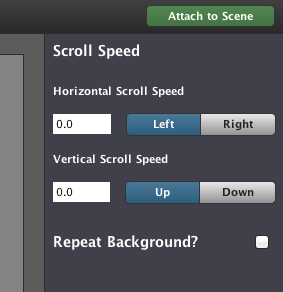
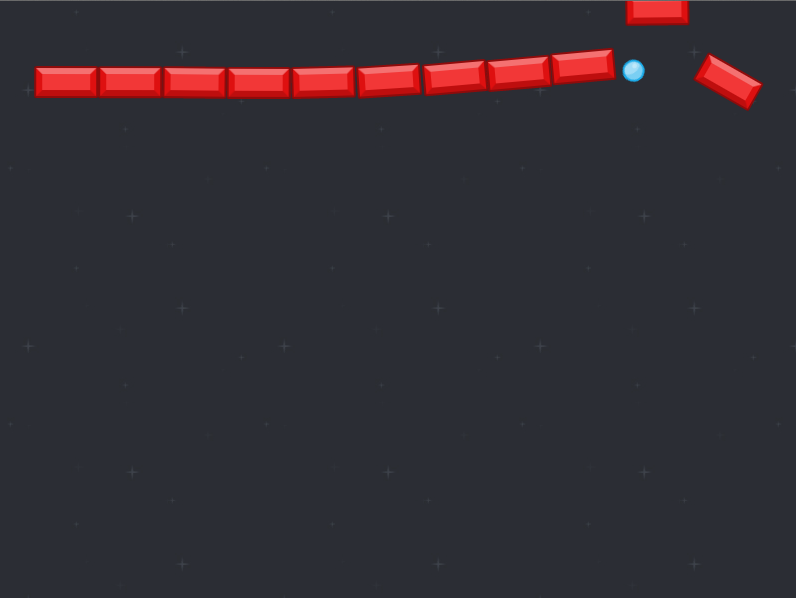

Creating the game:
Open Stencyl, click "Click here to create a new Game". There are lots of cool kits and things are available here, and I highly recommend you experiment with these at some point, but for now we want to keep it nice and simple, so choose Blank Game. This does exactly what it says on the tin, and creates a blank project to work in.
You'll need to enter a name for your game (I've gone with "Breakout Tutorial" but choose anything), and a game size. I prefer a slightly larger size, 800x600 for this example. Sometimes you'll want to create games at specific sizes, or in certain layouts - for example, a vertical shoot-em-up might be better as a tall layout.
Adding a Scene:
The first thing we’ll want is a Scene. Scenes are basically any screen in our game, and can be used for menus or levels or areas of your game. For our purposes we just want one (you have to have at least one scene to run a game). Click the big “create scene” prompt in the middle and give it a name (“Breakout” is fine as we're only making one scene, but in a larger game this could be a level, or a menu, or an inventory screen)
The first thing we’ll want is a background for the game - to do this, go to the Backgrounds tab. Create a new background, and give it a name (I went with "Starfield"). As we'll see later in the course, backgrounds are super useful: they can scroll with your game and various other things that will really add graphical coolness to your games.
For now we'll just make a single background image though. Our background isn’t animated, so it just has a single frame. Click the frame in the corner, and then hit “choose image”. Navigate to the game_assets folder for Breakout, and choose background.jpg.
Now, importantly make sure you click “Attach to scene” in the top-right corner of the screen, and then pick your game scene:

This will open the scene up, and you’ll see your background in the “Background” tab:
Test your game by clicking the big "Test game" button in the top right. You’ll hopefully see your game launch, complete with starry background.
At the moment if you go to the Scene tab in your game scene (the main area where you'll be adding bits of the game), you won’t actually see the starfield.
To remedy this, simply click the “Show background” toggle in the top right:
Adding the Ball:
It's not much of a game yet though, let’s add our first Actor - the Ball.
Hit “Create new…” (top left corner) and select Actor Type. All we do at this stage is give it a name - we’ve called it… Ball.

At the moment, our ball actor is completely empty - let’s give it some graphics. Technically even static graphics count as “animations”, click the prompt to add an animation. “Animation 0” doesn’t need to change, click the Add Frame prompt. If you then choose the Ball graphic (same as with backgrounds) it’ll import it for you.
IMPORTANT NOTE: when you pull graphics in, they are COPIED to the workspace. If you change the graphics externally, be sure to bring them in again!
Go back to your Scene - in the top right there’s an Actors tab that’s not selected. Hit it, and you’ll be able to see the Ball. This isn’t drag and drop, click it and you’ll be able to “paint” with your object. Try it! (we just need one ball, so add one and delete any others)
Test your game - we now have our ball floating in space. Neat! It's still not moving though: time to add some logic.
Making the ball move:
Create a new Actor Behaviour as shown below:
Add Event > Basics > When Creating. This means that the stuff we add here will ONLY happen once - at the instant the object is created. As our ball is already on the scene, it'll run as soon as the game runs.
Again, as before you need this behaviour to the Ball using the button in the top right. This is really important, if you don’t attach it then nothing will work! The process is the same as attaching the background to the scene earlier - click the green button in the top right, and pick the ball Actor.
If you go back into the Ball, you'll now be able to see your "ball physics" behaviour listed in the Behaviours tab. Actors can contain lots of behaviours, which you can enable and disable here.
Test the game, you should now see your ball whizz off to the right and fly off the screen.
What we need to do now is make the ball bounce back when it hits the side of the screen. This logic needs to happen in a new event, "updated". The logic here will be worked out before the screen display renders - this makes it perfect for figuring out collisions.
Working out the equivalent on the left hand side is much easier - we can add a second "if" check to the same bit we used for the first side. The calculation is much easier too, as the ball is left-aligned.
Test your game - the ball should now bounce between each side properly.
There are a few great things about the logic we've put in - firstly, it runs extremely quickly: much more quickly than using the physics engine, which for our use would be overkill. Secondly, we can use almost the exact same checks to handle vertical movement in our ball physics. To start, we add some Y movement when the ball is created. Add another line in the "Created" logic:
If you run the game now, you'll see the ball flies off the bottom of the screen - let's fix that next.
Handling the vertical part is almost identical to the existing horizontal code - in fact, we can copy and paste what we have for X movement, and change the values: X becomes Y, "width" becomes "height". Here's how it should look, I've also added some comments into it. Comments are ignored by the game, and are simply there to mark important bits or make things a bit more readable:
Run the game now, and hopefully our ball should merrily bounce around the screen properly.
Creating the blocks:
Let's add some blocks! Hit "Create New..." and make a new Actor Type in the same way we did the Ball:
Draw some blocks onto the game Scene - if you hold shift, you'll be able to draw a straight line of equally-spaced blocks:
Woah, physics! As you can see, the blocks fly off all over the place when the ball hits them. Although this is super cool, it's actually not what we want for our game.

First, we want to make sure the block is static, i.e. it can't be moved around. The physics tab in Block actor will let you change this:
The block is still part of the physics engine, even though it now doesn't move. By default, the block will still have some friction and material properties - this is great if we have a game where we want things to move realistically, but for our purposes that's not quite right!
Turning the Friction to 0 will mean that the ball won't deviate or slow down when it hits the block (we want the ball to be in continual motion)
Finally, turning the Bounciness to 1.0 (full) means the ball will bounce off it at exactly the same speed it hit at.
Test the game now - our ball wil bounce around, and when it hits a block we get a clean rebound and no slowdown.
Destroying the blocks:
The missing piece of puzzle the ability to destroy the block when the ball hits it - let's do this now.
Create new behaviour in the same way as before (hit Create New...), I've called mine "BlockCollisions". Inside this behaviour, we want to listen for a "collision" event, so our logic will run every time the block is hit by something. For this game it's easy - all that ever hits the block is the ball. Select the option shown below to add the simple hit test:
The collision logic will be put in for you, all you need to do is actually get rid of the block when the collision happens. Don't forget that this behaviour is being placed on the blocks, so we're going to destroy "self". To remove an object completely in Stencyl, you literally "kill" it:
Make sure to add the Behaviour to your Block actor as we did before! Now test the game - you should now see your blocks being removed when they're hit by the ball. In real games you might want something that's a bit smarter than "when this hits anything", but simplest is best for this example.
What's really cool about Behaviours is that now you've created the logic, you can apply it to lots of different things. For example, you can duplicate the RedBlock actor, change the graphic and the name (I've gone with "YellowBlock") - as long as you've added the same logic, the blocks will always be destroyed. This is a really powerful feature of both Stencyl and programming in general, and we'll go into it in much more detail later.
In my example I've now got multiple block types, each sharing a common behaviour. This means if we want to change the way the blocks work (say for example if we want to add sound) there's only one place we need to do it.
Controlling the game:
Time for some controls. For this example we'll do a nice simple mouse follow (we'll be covering keyboard controls in later lessons).
We'll make a new Behaviour as before - hit "Create New..." and make an actor behaviour like usual. I've called mine "PaddleMovement". This logic will be checking every frame in the same way as the ball, so create an "Updated" event.
In this event, we only want to do anything if we're holding the mouse button down. This logic is very easy to add in:
Firstly, let's simply set the X of the paddle to be the same as the X of the mouse:
Test the game - you'll notice the paddle is sort of in the wrong position, making the game kinda hard to play. This is because of the paddle's origin point of 0,0. There are two ways to fix this: you can either change the artwork so it's centered, or we can adapt the logic to move the paddle over a bit. Both are fine, but option 2 gives us chance to really look at the logic. Let's do that!
I find in these situations it's much better to spell it out in words before trying to code anything:
"When I'm holding the mouse down, set X position of the paddle to be the same as the X position of the mouse, minus half the width of the paddle".
The logic for this sentence is below. Pay careful attention to how the logic blocks stack up. Also note that I've added a little bit of extra logic in the "mouse down" section to hide the mouse cursor, and have added an "otherwise" block to show it again when we let go of the mouse.
(Don't forget to attach this Behaviour to the Paddle actor when you're finished!)
Making the game loseable:
OK, so we have a game, almost - to finish this, we need a way to win or lose, right? The "lose" logic is a nice easy one.
Again, this works great if you say it in English before trying it in logic: "when the ball goes past the bottom of the screen, lose the game". Luckily, we've already done most of the work in the BallPhysics behaviour! All we need to do is take out the logic that makes the ball bounce off the bottom edge, and replace it with something else to trigger the game losing.
For this example what we want to do is just fade to black and then re-load the same scene again, so the player can have another go. Stencyl has really useful handling to do this, see below:
Test your game and lose (on purpose of course) - the game should fade down to black, and then re-load the scene. Of course this could just as well go to a "you lose" screen, or whatever else you need your game to do.
Making the game winnable:
Losing was easy... now we need to win! This one is slightly more involved. The basic idea is that we want to keep track of whether or not we've destroyed all the blocks on the screen. To do this, we'll need some way of storing a number (the number of blocks) so we can keep an eye on it for when it reaches zero. In programming terms this is called a 'variable', and is simply a way of keeping a number stored that we refer to with a name. Stencyl does this too, and calls them Attributes.
To create an Attribute for your game, hit the Settings button (it looks like a light switch), and go to the Attributes tab. Create a new one, making sure it's of the type "Number", and give it a starting value of zero:
Now we have a way to keep the number recorded, we'll need to do two things: we'll need to add one to the number every time we create a block, and take one away when a block is destroyed. Then when we get to zero, we'll know the game is won.
We can piggy-back on logic we've already set up to do this. Firstly, in the BlockCollisions behaviour, we can add a Created event containing the following logic (I've added a "print" here so we can confirm it's working):
What's cool about this approach is that it means we don't need to manually type in a number of blocks at the start of the game - we're free to add and remove as many blocks from the level as we like, and this logic will always work.
To take one away from the number, we can go into the existing collision detection in BlockCollisions - it's the one where we 'kill' a block after the ball hits it. Just before the 'kill' command, we take one away from the Blocks attribute:
The final piece of the puzzle is to create some logic that listens to the value of the Blocks number - adding and taking away from it is only half the battle, we still need to figure out when the game is won.
To do this, we'll create a new Behaviour by hitting "Create new..." like usual. This time however we'll make a Scene behaviour - it's exactly the same as an actor behaviour, but will sit on our game scene.
We simply need to add an "Updated" event like we did on some of the other game components, and this one just contains a tiny bit of logic that keeps checking to see if "Blocks" is zero:
I've just printed a line to the console when we win, but of course it would be much cooler if we had a big "YOU WIN!" screen, or at least another level to play!
The final thing to note on this behaviour is the: "disable this behaviour" block. This is added because this logic is in the "updated" event, so it gets called every single time the screen updates (sixty frames per second!). This block simply means that the behaviour only runs once.
Finished! Congratulations, you've created a videogame!
Extra credit/things to try:
Can you add another level? What about "win" and "lose" screens?
At the moment, the paddle can travel off the screen - can you fix this?
In the real "Breakout", the side of the paddle that the ball hits changes the direction the ball moves - can you replicate this?